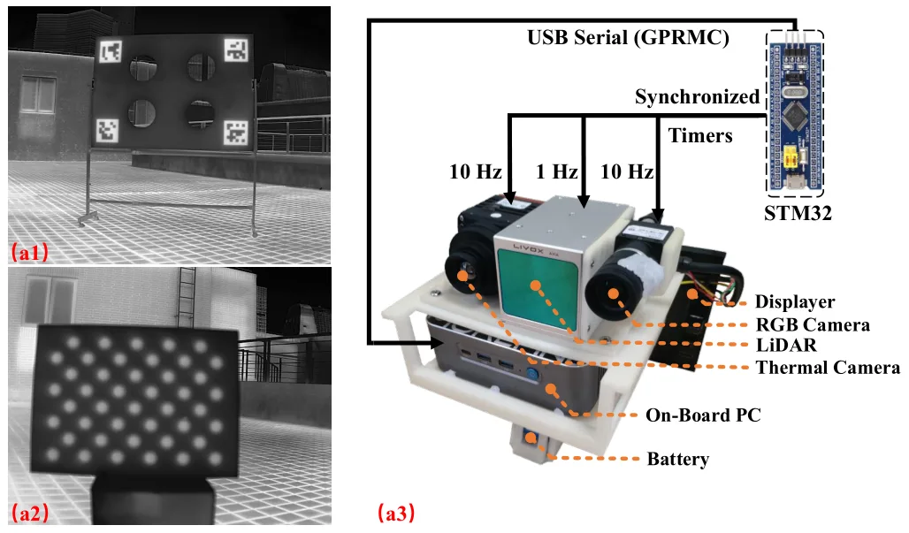
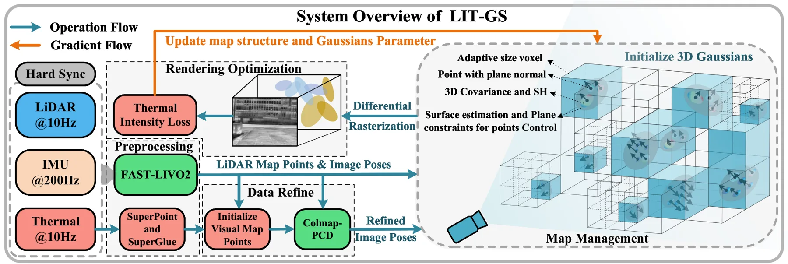
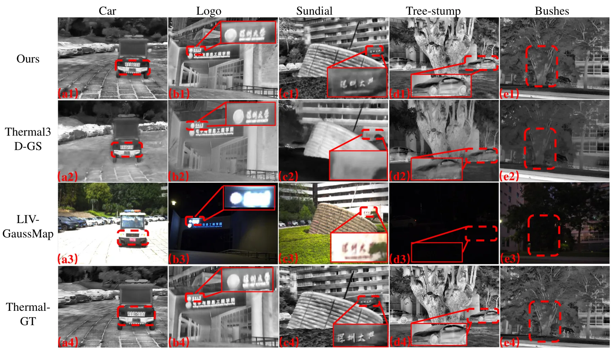
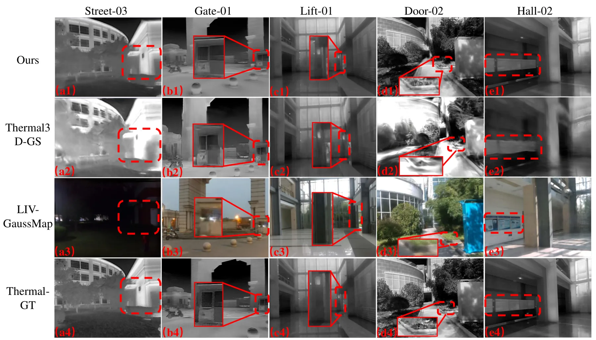
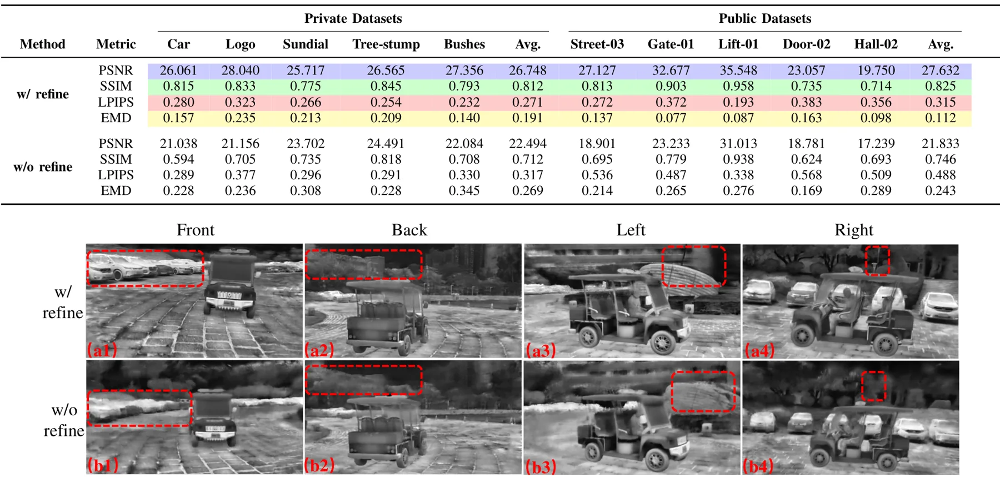
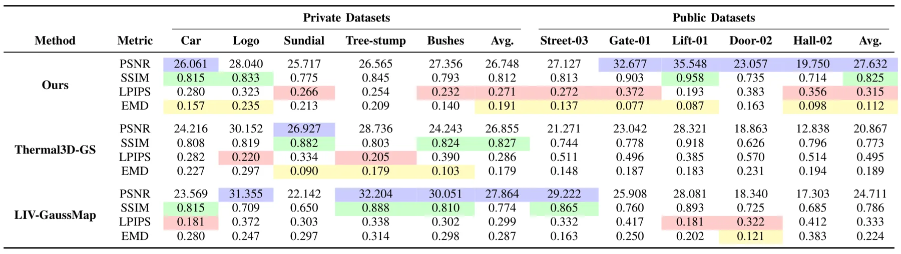
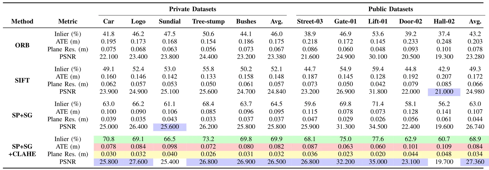

LIT-GS：面向光照鲁棒建图的 LiDAR-惯性-热红外 Gaussian SplattingLIT-GS: LiDAR-Inertial-Thermal Gaussian Splatting for Illumination-Robust Mapping
高度贴合多传感器 SLAM、3DGS 地图和视觉退化鲁棒建图；IROS 2026，值得优先阅读其跨模态关联、LiDAR 平面残差和 3DGS 几何正则化实现。
一句话工作总结
LIT-GS 把 LiDAR 平面几何、惯性和热红外引入 3DGS 建图，用 point-to-plane BA 与平面正则化 splatting 提升弱光/低纹理场景的结构稳定性。
摘要
Gaussian Splatting 已支持实时神经渲染，但现有 LiDAR-惯性-视觉（LIV）Gaussian mapping 流水线仍依赖 RGB 光度线索，在光照变化和低纹理场景下容易失效。本文提出 LIT-GS，一个 LiDAR-惯性-热红外 Gaussian Splatting 框架，在位姿/结构 refinement 与 Gaussian 优化中显式注入 LiDAR 平面几何约束。方法用 LIV 视觉地图点作为置信度感知的跨模态锚点，建立可靠 thermal-LiDAR 关联，并在 bundle adjustment 中加入加权 LiDAR 点到平面残差，在弱热红外监督下联合优化相机位姿和 3D 点。基于 refined structure，作者进一步提出 LiDAR-plane-regularized differentiable splatting objective，约束渲染 3D 点与局部观测平面对齐，缓解低对比热红外图像中的表面变厚和结构漂移。实验显示 LIT-GS 在私有序列和公开数据集上优于现有 LIV-based Gaussian Splatting baseline，尤其在复杂光照下提升几何精度和渲染质量。
Gaussian Splatting has enabled real-time neural rendering, yet existing LiDAR-inertial-visual (LIV) Gaussian mapping pipelines remain fragile under illumination changes and texture-deficient scenes due to their reliance on RGB photometric cues. We present LIT-GS, a LiDAR-inertial-thermal Gaussian Splatting framework that injects LiDAR-derived plane geometry as an explicit constraint in both pose/structure refinement and Gaussian optimization. Specifically, we exploit LIV visual map points as confidence-aware cross-modal anchors to establish reliable thermal-LiDAR associations, and incorporate weighted LiDAR point-to-plane residuals into bundle adjustment to jointly refine camera poses and 3D points under weak thermal supervision. Building on the refined structure, we further introduce a LiDAR-plane-regularized differentiable splatting objective that constrains rendered 3D points to align with locally observed planes, mitigating surface thickening and structural drift in low-contrast thermal imagery. Experiments on proprietary sequences and public datasets demonstrate that LIT-GS consistently improves geometric accuracy and rendering quality over state-of-the-art LIV-based Gaussian Splatting baselines, particularly in challenging lighting conditions.
中文解读摘录
- 链接：abs / PDF；作者：Shikuan Shi, Chunran Zheng, Jiaming Xu, Tianyong Ye, Tao Yu, Yukang Cui；类别：cs.RO；备注：IROS 2026；采集 score=20。
- 核心思路：提出 LiDAR-Inertial-Thermal Gaussian Splatting，针对 LIV/3DGS 建图在光照变化、低纹理、弱 RGB photometric cue 下的脆弱性，引入 LiDAR 平面几何作为显式约束。
- 方法要点：用 LIV 视觉地图点作为置信度感知的跨模态 anchor，建立 thermal-LiDAR 关联；在 BA 中加入加权 LiDAR point-to-plane residual，共同优化相机位姿和 3D 点；再用 LiDAR-plane-regularized differentiable splatting objective 抑制热红外低对比图像下的表面变厚和结构漂移。
- 关注点：这是今天最贴近“多传感器 SLAM + 3DGS 地图”的论文。建议重点看 LiDAR 平面残差如何进入 BA、thermal-LiDAR association 的可靠性判据、以及是否能迁移到夜间/烟尘/地下等视觉退化场景。
图表/页面预览
{kind=link}

{kind=link}

{kind=link}

{kind=link}

{kind=link}

{kind=link}

{kind=link}
